2 Modeling Measurement and Count Data
2.1 Introduction
We first consider the general situation where there is a hypothetical population of individuals of interest and there is a continuous-valued measurement \(Y\) associated with each individual. One represents the collection of measurements from all individuals by means of a continuous probability density \(f(y)\). As discussed in Chapter 5, one summarizes this probability density with the mean \(\mu\): \[\begin{equation} \mu = \int y f(y) dy. \end{equation}\] The value \(\mu\) gives us a sense of the location of a typical value of the continuous measurement \(Y\).
To learn about the population of measurements, a random sample of individuals \(Y_1, ..., Y_n\) will be taken. The general inferential problem is to use these measurements together with any prior beliefs to learn about the population mean \(\mu\). In other words, the goal is to use the collected measurements to learn about a typical value of the population of measurements.
2.2 Modeling Measurements
2.2.1 Examples
College applications
How many college applications does a high school senior in the United States complete? Here one imagines a population of all American high school seniors and the measurement is the number of completed college applications. The unknown quantity of interest is the mean number of applications \(\mu\) completed by these high school seniors. The inferential question may be stated by asking, on average, how many college applications does an American high school senior complete. The answer to this question gives one a sense of the number of completed applications for a typical high school senior. To learn about the average \(\mu\), it would be infeasible to collect this measurement from every high school senior in the U.S. Instead, a survey is typically conducted to a sample of high school seniors (ideally a sample representative of all American high school seniors) and based on the measurements from this sample, some inference is performed about the mean number of college applications.
Household spending
How much does a household in San Francisco spend on housing every month? One visualizes the population of households in San Francisco and the continuous measurement is the amount of money spent on housing (either rent for renters and mortgage for homeowners) for a resident. One can ask “on average, how much does a household spend on housing every month in San Francisco?”, and the answer to this question gives one a sense of the housing costs for a typical household in San Francisco. To learn about the mean value of housing \(\mu\) of all San Francisco residents, a sample survey is conducted. The mean value of the housing costs \(\bar y\) from this sample of surveyed households is informative about the mean housing cost \(\mu\) for all residents.
Weights of cats
Suppose you have a domestic shorthair cat weighing 14 pounds and you want to find out if she is overweight. One imagines a population of all domestic shorthair cats and the continuous measurement is the weight in pounds. Suppose you were able to compute the mean weight \(\mu\) of all shorthair cats. Then by comparing 14 pounds (the weight of our cat) to this mean, you would know whether your cat is overweight, or underweight, or close to the mean. If we were able to find the distribution of the weights of all domestic shorthair cats, then one observes the proportion of weights smaller than 14 pounds in the distribution and learns if the cat is severely overweight. To learn if our cat is overweight, you can ask the vet. How does the vet know? Extensive research has been conducted periodically to record weights of a large sample of domestic shorthair cats, and by using these sample of weights, the vet performs an inference about the mean \(\mu\) of the weights of all domestic shorthair cats.
2.2.2 The general approach
Recall the three general steps of Bayesian inference discussed in Chapter 7 in the context of an unknown proportion \(p\).
Step 1: Prior We express an opinion about the location of the proportion \(p\) before sampling.
Step 2: Data/Likelihood We take the sample and record the observed proportion.
Step 3: Posterior We use Bayes’ rule to sharpen and update the previous opinion about \(p\) given the information from the sample.
In this setting, we have a continuous population of measurements that we represent by the random variable \(Y\) with density function \(f(y)\). It is convenient to assume that this population has a Normal shape with mean \(\mu\) and standard deviation \(\sigma\). That is, a single measurement \(Y\) is assume to come from the density function \[\begin{equation} f(y) = \frac{1}{\sqrt{2 \pi} \sigma} \exp\left\{- \frac{(y - \mu)^2}{2 \sigma^2}\right\}, -\infty < y< \infty. \end{equation}\] displayed in Figure 8.1. To simplify the discussion, it is convenient to assume that the standard deviation \(\sigma\) of the measurement distribution is known. Then the objective is to learn about the single mean measurement \(\mu\).
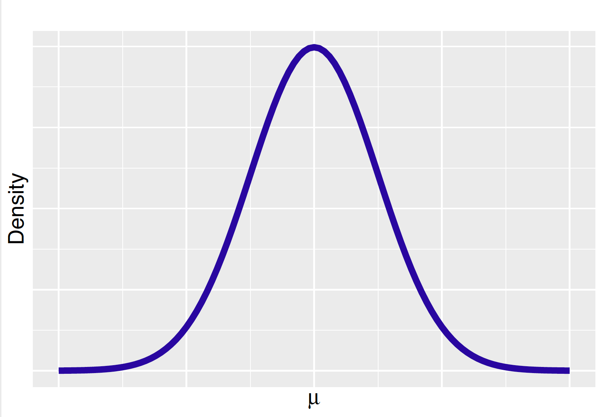
Step 1 in Bayesian inference is to express an opinion about the parameter. In this continuous measurement setting, one constructs a prior for the mean parameter \(\mu\) that expresses one’s opinion about the location of this mean. In this chapter, we discuss different ways to specify a prior distribution for \(\mu\). One attractive discrete approach for expressing this prior opinion, similar to the approach in Chapter 7 for a proportion \(p\), has two steps. First one constructs a list of possible values of \(\mu\), and then one assigns probabilities to the possible values to reflect one’s belief. Alternatively, we will describe the use of a continuous prior to represent one’s belief for \(\mu\). This is a more realistic approach for constructing a prior since one typically views the mean as a real-valued parameter.
Step 2 of our process is to collect measurements from a random sample to gain more information about the parameter \(\mu\). In our first situation, one collects the number of applications from a sample of 100 high school seniors. In the second example, one collects a sample of 2000 housing costs, each from a sampled San Francisco household. The third example collects a sample of 200 different weights of domestic shorthair cats, each from a sampled cat. If these measurements are viewed as independent observations from a Normal sampling density with mean \(\mu\), then one constructs a likelihood function which is the joint density of the sampled measurements viewed as a function of the unknown parameter.
Once the prior is specified and measurements have been collected, one proceeds to Step 3 to use Bayes’ rule to update one’s prior opinion to obtain a posterior distribution for the mean \(\mu\). The algebraic implementation of Bayes’ rule is a bit more tedious when dealing with continuous data with a Normal sampling density. But we will see there is a simple procedure for computing the posterior mean and standard deviation.
2.2.3 Outline of chapter
Throughout this chapter, the entire inferential process is described for learning about a mean \(\mu\) assuming a Normal sampling density for the measurements. This chapter discusses how to construct a prior distribution that matches one’s prior belief, how to extract information from the data by the likelihood function, and how to update one’s opinion in the posterior, combining the prior and data information in a natural way.
Section 8.3 introduces inference with a discrete prior distribution for the mean \(\mu\) and Section 8.4 introduces the continuous family of Normal prior distributions for the mean. The inferential process with a Normal prior distribution is described in detail in Section 8.5. Section 8.6 describes some general Bayesian inference methods in this Normal data/Normal prior setting, such as Bayesian hypothesis testing, Bayesian credible intervals and Bayesian prediction. These sections describe the use of both exact analytical solutions and approximation simulation-based calculations. Section 8.7 introduces the use of the posterior predictive distribution as a general tool for checking if the observed data is consistent with predictions from the Bayesian model.
The chapter concludes in Section 8.8 by introducing a popular one-parameter model for counts, the Poisson distribution, and its conjugate Gamma distribution for representing prior opinion. Although this section does not deal with the Normal mean situation, the exposure to the important Gamma-Poisson conjugacy will enhance our understanding and knowledge of the analytical process of combining the prior and likelihood to obtain the posterior distribution.
2.3 Bayesian Inference with Discrete Priors
2.3.1 Example: Roger Federer’s time-to-serve
Roger Federer is recognized as one of the greatest players in tennis history. One aspect of his play that people enjoy is his businesslike way of serving to start a point in tennis. Federer appears to be efficient in his preparation to serve and some of his service games are completed very quickly. One measures one’s service efficiency by the time-to-serve which is the measured time in seconds between the end of the previous point and the beginning of the current point.
Since Federer is viewed as an efficient server, this raises the question: how long, on average, is Federer’s time-to-serve? We know two things about his time-to-serve measurements. First, since they are time measurements, they are continuous variables. Second, due to a number of other variables, the measurements will vary from serve to serve. Suppose one collects a single time-to-serve measurement in seconds. denoted as \(Y\). It seems reasonable to assume \(Y\) is Normally distributed with unknown mean \(\mu\) and standard deviation \(\sigma\). From previous data, we assume that the standard deviation is known and given by \(\sigma = 4\) seconds.
Recall the Normal probability curve has the general form
\[\begin{equation} f(y) = \frac{1}{\sqrt{2 \pi} \sigma} \exp\left\{- \frac{(y - \mu)^2}{2 \sigma^2}\right\}, -\infty < y< \infty. \end{equation}\] Since \(\sigma = 4\) is known, the only parameter in Equation (8.3) is \(\mu\). We are interested in learning about the mean time-to-serve \(\mu\).
A convenient first method of implementing Bayesian inference is by the use of a discrete prior. One specifies a subjective discrete prior for Federer’s mean time-to-serve by specifying a list of plausible values for \(\mu\) and assigning a probability to each of these values.
In particular suppose one thinks that values of the equally spaced values \(\mu\) = 15, 16, \(\cdots\), 22 are plausible. In addition, one does not have any good reason to think that any of these values for the mean are more or less likely, so a Uniform prior will be assigned where each value of \(\mu\) is assigned the same probability \(\frac{1}{8}\). \[\begin{equation} \pi(\mu) = \frac{1}{8}, \, \, \, \, \mu = 15, 16, ..., 22. \end{equation}\] Each value of \(\mu\) corresponds to a particular Normal sampling curve for the time-to-serve measurement. Figure 8.2 displays the eight possible Normal sampling curves. Our prior says that each of these eight sampling curves has the same prior probability.
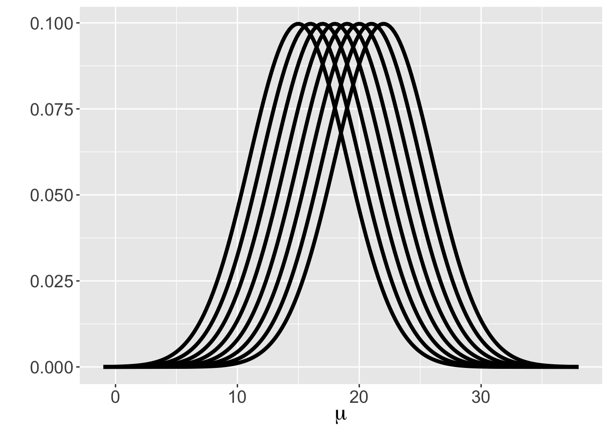
To learn more about the mean \(\mu\), one collects a single time-to-serve measurement for Federer, and suppose it is 15.1 seconds, that is, one observes \(Y = 15.1\). The likelihood function is the Normal density of the actual observation \(y\) viewed as a function of the mean \(\mu\) (remember that it was assumed that \(\sigma = 4\) was given). By substituting in the observation \(y = 15.1\) and the known value of \(\sigma = 4\), one writes the likelihood function as
\[\begin{eqnarray*} L(\mu) = \frac{1}{\sqrt{2 \pi} 4} \exp\left\{- \frac{1}{2 (4)^2}(15.1 - \mu)^2\right\}. \end{eqnarray*}\]
For each possible value of \(\mu\), we substitute the value into the likelihood expression. For example, the likelihood of \(\mu = 15\) is equal to \[\begin{eqnarray*} L(15) &=& \frac{1}{\sqrt{2 \pi} (4)} \exp\left(- \frac{1}{2 (4)^2}(15.1 - 15)^2\right) \nonumber \\ &\approx & 0.0997. \end{eqnarray*}\] This calculation is repeated for each of the eight values \(\mu = 15, 16, \cdots, 22\), obtaining eight likelihood values.
A discrete prior has been assigned to the list of possible values of \(\mu\) and one is now able to apply Bayes’ rule to obtain the posterior distribution for \(\mu\). The posterior probability of the value \(\mu = \mu_i\) given the data \(y\) for a discrete prior has the form \[\begin{equation} \pi(\mu_i \mid y) = \frac{\pi(\mu_i) \times L(\mu_i)}{\sum_j \pi(\mu_j) \times L(\mu_j)}, \end{equation}\] where \(\pi(\mu_i)\) is the prior probability of \(\mu = \mu_i\) and \(L(\mu_i)\) is the likelihood function evaluated at \(\mu = \mu_i\).
If a discrete Uniform prior distribution for \(\mu\) is assigned, one has \(\pi(\mu_i) = \frac{1}{8}\) for all \(i = 1, \cdots, 8\), and \(\pi(\mu_i)\) is canceled out from the numerator and denominator in Equation (8.5). In this case one calculates the likelihood values \(L(\mu_i)\) for all \(i = 1, \cdots, 8\) and normalizes these values to obtain the posterior probabilities \(\pi(\mu_i \mid y)\). Table 8.1 displays the values of \(\mu\) and the corresponding values of Prior, Data/Likelihood, and Posterior. Readers are encouraged to verify the results shown in the table.
Table 8.1. Value, prior, data/likelihood and posterior for () with a single observation.
| () | Prior | Data/Likelihood | Posterior |
|---|---|---|---|
| 15 | 0.125 | 0.0997 | 0.1888 |
| 16 | 0.125 | 0.0972 | 0.1842 |
| 17 | 0.125 | 0.0891 | 0.1688 |
| 18 | 0.125 | 0.0767 | 0.1452 |
| 19 | 0.125 | 0.0620 | 0.1174 |
| 20 | 0.125 | 0.0471 | 0.0892 |
| 21 | 0.125 | 0.0336 | 0.0637 |
| 22 | 0.125 | 0.0225 | 0.0427 |
With the single measurement of time-to-serve of \(y = 15.1\), one sees from Table 8.1 that the posterior distribution for \(\mu\) favors values \(\mu\) = 15, and 16. In fact, the posterior probabilities decrease as a function of \(\mu\). The Prior column reminds us that the prior distribution is Uniform. Bayesian inference uses the collected data to sharpen one’s belief about the unknown parameter from the prior distribution to the posterior distribution. For this single observation, the sample mean is \(y = 15.1\) and the \(\mu\) value closest to the sample mean (\(\mu = 15\)) is assigned the highest posterior probability.
Typically one collects multiple time-to-serve measurements. Suppose one collects \(n\) time-to-serve measurements, denoted as \(Y_1, ..., Y_n\), that are Normally distributed with mean \(\mu\) and fixed standard deviation \(\sigma = 4\). Each observation follows the same Normal density \[\begin{equation} f(y_i) = \frac{1}{\sqrt{2 \pi} \sigma} \exp\left\{\frac{-(y_i - \mu)^2}{2 \sigma^2}\right\}, -\infty < y_i < \infty. \end{equation}\] Again since \(\sigma = 4\) is known, the only parameter in Equation (8.6) is \(\mu\) and we are interested in learning about this mean parameter \(\mu\). Suppose the same discrete Uniform prior is used as in Equation (8.4) and graphed in Figure 8.2. The mean \(\mu\) takes on the values \(\{15, 16, \cdots, 22\}\) with each value assigned the same probability of \(\frac{1}{8}\).
Suppose one collects a sample of 20 times-to-serve for Federer:
15.1 11.8 21.0 22.7 18.6 16.2 11.1 13.2 20.4 19.2
21.2 14.3 18.6 16.8 20.3 19.9 15.0 13.4 19.9 15.3When multiple time-to-serve measurements are taken, the likelihood function is the joint density of the actual observed values \(y_1, ..., y_n\) viewed as a function of the mean \(\mu\). After some algebra (detailed derivation in Section 8.3.2), one writes the likelihood function as \[\begin{eqnarray} L(\mu) & = &\prod_{i=1}^n \frac{1}{\sqrt{2 \pi} \sigma} \exp\left\{- \frac{1}{2 \sigma^2}(y_i - \mu)^2\right\} \nonumber \\ & \propto &\exp\left\{-\frac{n}{2 \sigma^2}(\bar y - \mu)^2\right\} \nonumber \\ & = & \exp\left\{-\frac{20}{2 (4)^2}(\bar y - \mu)^2\right\} , \end{eqnarray}\] where we have substituted the known values \(n = 20\) and the standard deviation \(\sigma = 4\). From our sample, we compute the sample mean \(\bar y = (15.1 + 11.8 + ... + 15.3) / 20 = 17.2\). The value of \(\bar y\) is substituted into Equation (8.7), and for each possible value of \(\mu\), we substitute the value to find the corresponding likelihood. For example, the likelihood of \(\mu = 15\) is equal to \[\begin{align*} L(15) & = \exp\left\{-\frac{20}{2 (4)^2}(17.2 - 15)^2\right\} \nonumber \\ & \approx 0.022. \end{align*}\] This calculation is repeated for each of the eight values \(\mu = 15, 16, ..., 22\), obtaining eight likelihood values.
One now applies Bayes’ rule to obtain the posterior distribution for \(\mu\). The posterior probability of \(\mu = \mu_i\) given the sequence of recorded times-to-serve \(y_1, \cdots, y_n\) has the form \[\begin{equation} \pi(\mu_i \mid y_1, \cdots, y_n) = \frac{\pi(\mu_i) \times L(\mu_i)}{\sum_j \pi(\mu_j) \times L(\mu_j)}, \end{equation}\] where \(\pi(\mu_i)\) is the prior probability of \(\mu = \mu_i\) and \(L(\mu_i)\) is the likelihood function evaluated at \(\mu = \mu_i\). We saw in equation @ref(eq:normaldiscretejointlikelihood) that only the sample mean, \(\bar{y}\), is needed in the calculation of the likelihood, so \(\bar{y}\) is used in place of \(y_1, \cdots, y_n\) in the formula.
With a discrete Uniform prior distribution for \(\mu\), again one has \(\pi(\mu_i) = \frac{1}{8}\) for all \(i = 1, \cdots, 8\) and \(\pi(\mu_i)\) is canceled out from the numerator and denominator in Equation (8.8). One calculates the posterior probabilities by computing \(L(\mu_i)\) for all \(i = 1, \cdots, 8\) and normalizing these values. Table 8.2 displays the values of \(\mu\) and the corresponding values of Prior, Data/Likelihood, and Posterior. Readers are encouraged to verify the results shown in the table.
Table 8.2. Value, prior, data/likelihood, and posterior for () with (n) observations.
| () | Prior | Data/Likelihood | Posterior |
|---|---|---|---|
| 15 | 0.125 | 0.0217 | 0.0217 |
| 16 | 0.125 | 0.1813 | 0.1815 |
| 17 | 0.125 | 0.4350 | 0.4353 |
| 18 | 0.125 | 0.2990 | 0.2992 |
| 19 | 0.125 | 0.0589 | 0.0589 |
| 20 | 0.125 | 0.0033 | 0.0033 |
| 21 | 0.125 | 0.0001 | 0.0001 |
| 22 | 0.125 | 0.0000 | 0.0000 |
It is helpful to construct a graph (see Figure 8.3) where one contrasts the prior and probability probabilities for the mean time-to-serve \(\mu\). While the prior distribution is flat, the posterior distribution for \(\mu\) favors the values \(\mu\) = 16, 17, and 18 seconds. Bayesian inference uses the observed data to revise one’s belief about the unknown parameter from the prior distribution to the posterior distribution. Recall that the sample mean \(\bar{y}\) = 17.2 seconds. From Table 8.2 and Figure 8.3 one sees the clear effect of the observed sample mean – \(\mu\) is likely to be close to the value 17.2.
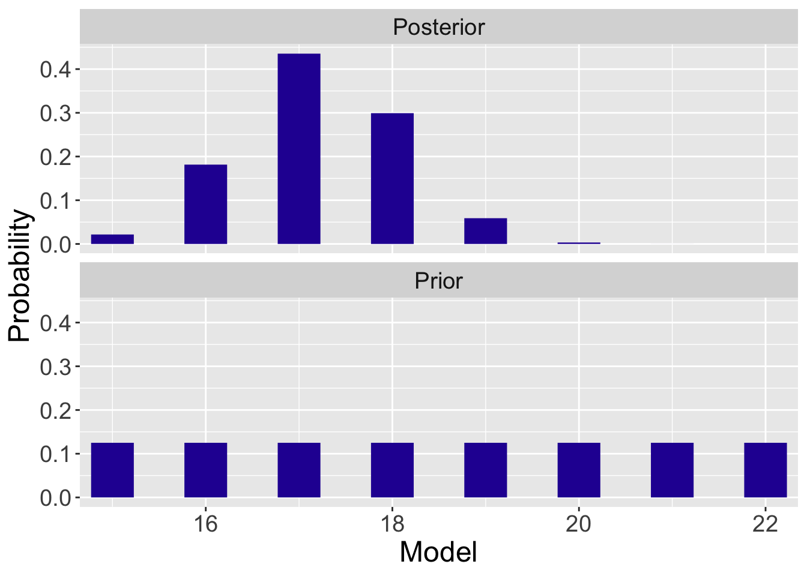
2.3.2 Simplification of the likelihood
The likelihood function is the joint density of the observations \(y_1, ..., y_n\), viewed as a function of the mean \(\mu\) (since \(\sigma=4\) is given). With \(n\) observations being identically and independently distributed (i.i.d.) as \({\rm{Normal}}({\mu, 4})\), the likelihood function is the product of Normal density terms. In the algebra work that will be done shortly, the likelihood, as a function of \(\mu\), is found to be Normal with mean \(\bar y\) and standard deviation \(\sigma / \sqrt{n}\).
The calculation of the posterior probabilities is an application of Bayes’ rule illustrated in earlier chapters. One creates a data frame of values mu and corresponding probabilities Prior. One computes the likelihood values in the variable Likelihood and the posterior probabilities are found using the bayesian_crank() function.
df <- data.frame(mu = seq(15, 22, 1),
Prior = rep(1/8, 8)) %>%
mutate(Likelihood = dnorm(mu, 17.2, 4 / sqrt(20)))
df <- bayesian_crank(df)
round(df, 4) mu Prior Likelihood Product Posterior
1 15 0.125 0.0217 0.0027 0.0217
2 16 0.125 0.1813 0.0227 0.1815
3 17 0.125 0.4350 0.0544 0.4353
4 18 0.125 0.2990 0.0374 0.2992
5 19 0.125 0.0589 0.0074 0.0589
6 20 0.125 0.0033 0.0004 0.0033
7 21 0.125 0.0001 0.0000 0.0001
8 22 0.125 0.0000 0.0000 0.0000Derivation of \(L(\mu) \propto \exp \left(-\frac{n}{2 \sigma^2}(\bar{y} - \mu)^2\right)\)
In the following, we combine the terms in the exponent, expand all of the summation terms, and complete the square to get the result.
\[\begin{eqnarray} L(\mu) &=& \prod_{i=1}^n \frac{1}{\sqrt{2 \pi} \sigma} \exp\left\{- \frac{1}{2 \sigma^2}(y_i - \mu)^2\right\} \nonumber \\ &=& \left(\frac{1}{\sqrt{2 \pi}\sigma}\right)^n \exp\left\{-\frac{1}{2 \sigma^2} \sum_{i=1}^{n} (y_i - \mu)^2\right\}\nonumber \\ &\propto& \exp \left\{ -\frac{1}{2 \sigma^2} \sum_{i=1}^{n} (y_i^2 - 2\mu y_i + \mu^2)\right\} \nonumber \\ \texttt{[expand the $\sum$ terms]} &=& \exp \left\{ -\frac{1}{2 \sigma^2} \left( \sum_{i=1}^{n} y_i^2 - 2\mu \sum_{i=1}^{n} y_i + n\mu^2 \right) \right\} \nonumber \\ &\propto& \exp \left\{- \frac{1}{2 \sigma^2} \left(-2 \mu \sum_{i=1}^{n} y_i + n \mu^2 \right) \right\}\nonumber \\ \texttt{[replace $\sum$ with $n\bar{y}$]} &=& \exp \left\{ - \frac{1}{2 \sigma^2} \left(-2 n \mu \bar{y} + n \mu^2 \right) \right\}\nonumber \\ \texttt{[complete the square]} &=& \exp \left\{ -\frac{n}{2 \sigma^2} (\mu^2 - 2\mu \bar{y} + \bar{y}^2) + \frac{n}{2 \sigma^2} \bar{y}^2\right\} \nonumber \\ &\propto& \exp \left\{-\frac{n}{2 \sigma^2}(\bar{y} - \mu)^2\right\} \end{eqnarray}\]
Sufficient statistic
There are different ways of writing and simplifying the likelihood function. One can choose to keep the product sign and each \(y_i\) term, and leave the likelihood function as \[\begin{equation} L(\mu) = \prod_{i=1}^n \frac{1}{\sqrt{2 \pi} \sigma} \exp\left\{- \frac{1}{2 \sigma^2}(y_i - \mu)^2\right\}. \end{equation}\] Doing so requires one to calculate the individual likelihood from each time-to-serve measurement \(y_i\) and multiply these values to obtain the function \(L(\mu)\) used to obtain the posterior probability.
If one instead simplifies the likelihood to be \[\begin{equation} L(\mu) \propto \exp \left\{-\frac{n}{2 \sigma^2}(\bar{y} - \mu)^2\right\}, \end{equation}\] all the proportionality constants drop out in the calculation of the posterior probabilities for different values of \(\mu\). In the application of Bayes’ rule, one only needs to know the number of observations \(n\) and the mean time to serve \(\bar{y}\) to calculate the posterior. Since the likelihood function depends on the data only through the value \(\bar{y}\), the statistic \(\bar{y}\) is called a sufficient statistic for the mean \(\mu\).
2.3.3 Inference: Federer’s time-to-serve
What has one learned about Federer’s mean time-to-serve from this Bayesian analysis? Our prior said that any of the eight possible values of \(\mu\) were equally likely with probability \(0.125\). After observing the sample of 20 measurements, one believes \(\mu\) is most likely \(16\), 17, and \(18\) seconds, with respective probabilities \(0.181, 0.425\), and \(0.299\). In fact, if one adds up the posterior probabilities, one says that \(\mu\) is in the set {16, 17, 18} seconds with probability \(0.915\). \[\begin{eqnarray*} Prob(16 \leq \mu \leq 18) = 0.181 + 0.435 + 0.299 = 0.915 \end{eqnarray*}\] This region of values of \(\mu\) is called a \(91.5\%\) posterior probability region for the mean time-to-serve \(\mu\).
2.4 Continuous Priors
2.4.1 The Normal prior for mean \(\mu\)
Returning to our example, one is interested in learning about the time-to-serve for the tennis player Roger Federer. His serving times are believed to be Normally distributed with unknown mean \(\mu\) and known standard deviation \(\sigma = 4\). The focus is on learning about the mean value \(\mu\).
In the prior construction in Section 8.3, we assumed \(\mu\) was discrete, taking only integer values from \(15\) to \(22\). However, the mean time-to-serve \(\mu\) does not have to be an integer. In fact, it is more realistic to assume \(\mu\) is continuous-valued. One widely-used approach for representing one’s belief about a Normal mean is based on a Normal prior density with mean \(\mu_0\) and standard deviation \(\sigma_0\), that is \[\begin{eqnarray*} \mu \sim {\rm{Normal}}(\mu_0, \sigma_0). \end{eqnarray*}\]
There are two parameters for this Normal prior: the value \(\mu_0\) represents one’s “best guess” at the mean time-to-serve \(\mu\) and \(\sigma_0\) indicates how sure one thinks about the guess.
To illustrate the use of different priors for \(\mu\), let’s consider the opinion of one tennis fan Joe who has strong prior information about the mean. His best guess at Federer’s mean time-to-serve is 18 seconds so he lets \(\mu_0 = 18\). He is very sure of this guess and so he chooses \(\sigma_0\) to be the relatively small value of \(0.4\). In contrast, a second tennis fan Kate also thinks that Federer’s mean time-to-serve is 18 seconds, but does not have a strong belief in this guess and chooses the large value \(2\) of the standard deviation \(\sigma_0\). Figure 8.4 shows these two Normal priors for the mean time-to-serve \(\mu\).
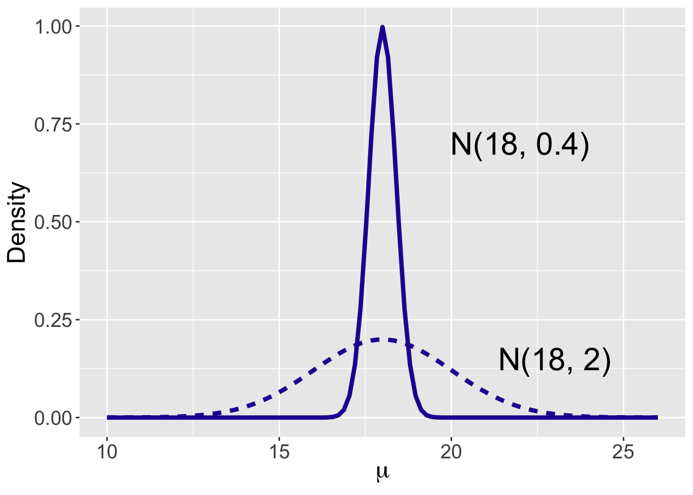
Both curves are symmetric and bell-shaped, centered at \(\mu_0\) = 18. The main difference is the spread of the two curves: a Normal(8, 0.4) curve is much more concentrated around the mean \(\mu_0\) = 18 compared to the Normal(8, 2) curve. Since the value of the probability density function at a point reflects the probability at that value, the Normal(8, 0.4) prior reflects the belief that the mean time to serve will most likely be around \(\mu_0\) = 18 seconds, whereas the Normal(8, 2) prior indicates that the mean \(\mu\) could be as small as 15 seconds and as large as 20 seconds.
2.4.2 Choosing a Normal prior
Informative prior
How does one in practice choose a Normal prior for \(\mu\) that reflects prior beliefs about the location of this parameter? One indirect strategy for choosing for selecting values of the prior parameters \(\mu_0\) and \(\sigma_0\) is based on the specification of quantiles. On the basis of one’s prior beliefs, one specifies two quantiles of the Normal density. Then the Normal parameters are found by matching these two quantiles to a particular Normal curve.
Recall the definition of a quantile — in this setting it is a value of the mean \(\mu\) such that the probability of being smaller than that value is a given probability. To construct one’s prior for Federer’s mean time-to-serve, one thinks first about two quantiles. Suppose one specifies the 0.5 quantile to be 18 seconds — this means that \(\mu\) is equally likely to be smaller or larger than 18 seconds. Next, one decides that the 0.9 quantile is 20 seconds. This means that one’s probability that \(\mu\) is smaller than 20 seconds is 90%. Given values of these two quantiles, the unique Normal curve is found that matches this information.
The matching is performed by the R function normal.select(). One inputs two quantiles by ```list} statements, and the output is the mean and standard deviation of the Normal prior.
normal.select(list(p = 0.5, x = 18), list(p = 0.9, x = 20))$mu
[1] 18
$sigma
[1] 1.560608The Normal curve with mean \(\mu_0 = 18\) and \(\sigma_0 = 1.56\), displayed in Figure 8.5, matches the prior information stated by the two quantiles.
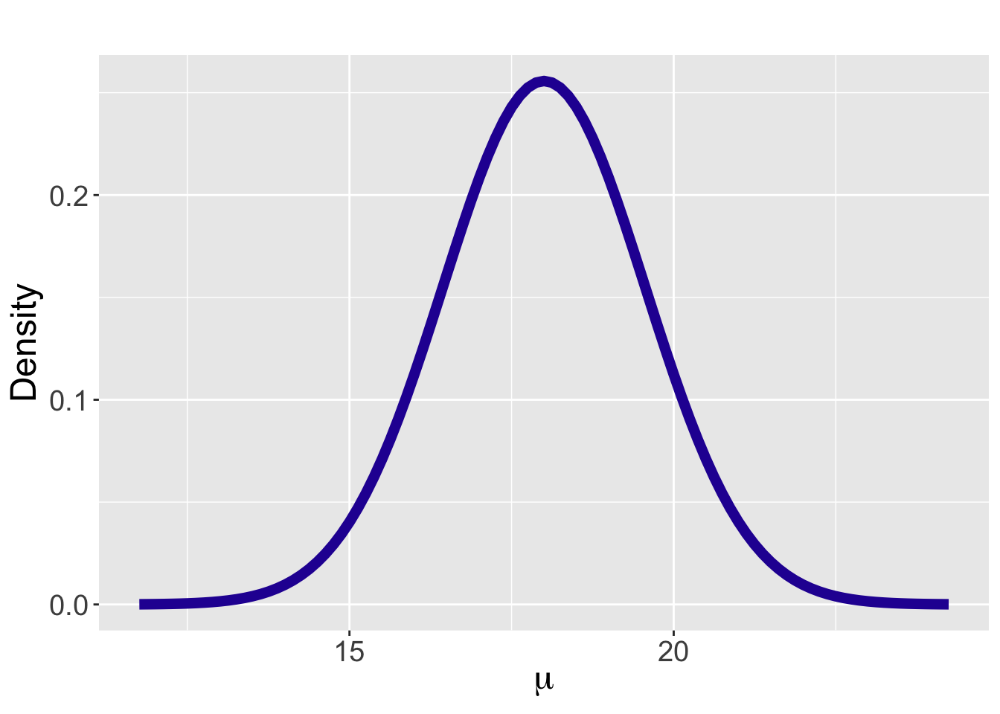
Since our measurement skills are limited, this prior is just an approximation to one’s beliefs about \(\mu\). We recommend in practice that one perform several checks to see if this Normal prior makes sense. Several functions are available to help in this prior checking.
For example, one finds the 0.25 quantile of our prior using the qnorm() function.
qnorm(0.25, 18, 1.56)[1] 16.9478This prior says that the prior probability that \(\mu\) is smaller than 16.95 is 25%. If this does not seem reasonable, one would make adjustments in the values of the Normal mean and standard deviation until a reasonable Normal prior is found.
Weekly informative prior
We have been assuming that one has some information about the mean parameter \(\mu\) that is represented by a Normal prior. What would a user do in the situation where little is known about the location on \(\mu\)? For a Normal prior, the standard deviation \(\sigma_0\) represents the sureness of one’s belief in one’s guess \(\mu_0\) at the value of the mean. If one is really unsure about any guess at \(\mu\), then one assigns the standard deviation \(\sigma_0\) a large value. Then the choice of the prior mean will not matter, so we suggest using a Normal(0, \(\sigma_0\)) with a large value for \(\sigma_0\). This prior indicates that \(\mu\) may plausibly range over a large interval and represents weakly informative prior belief about the parameter.
As will be seen later in this chapter, when a vague prior is chosen, the posterior inference for \(\mu\) will largely be driven by the data. This behavior is desirable since this person knows little about the location of \(\mu\) a priori in this situation and wants the data to inform about the location of \(\mu\) with little influence by the prior.
2.5 Updating the Normal Prior
2.5.1 Introduction
Continuing our discussion on learning about the mean time-to-serve for Roger Federer, the current prior beliefs about Federer’s mean time-to-serve \(\mu\) are represented by a Normal curve with mean \(18\) seconds and standard deviation 1.56 seconds.
Next some data is collected — Federer’s time-to-serves are recorded for 20 serves and the sample mean is \(17.2\) seconds. Recall that we are assuming the population standard deviation \(\sigma = 4\) seconds. The likelihood is given by \[\begin{equation} L(\mu) \propto \exp \left\{-\frac{n}{2 \sigma^2}(\bar{y} - \mu)^2\right\}, \end{equation}\] and with substitution of the values \(\bar y = 17.2\), \(n = 20\), and \(\sigma = 4\), we obtain \[\begin{eqnarray} L(\mu) &\propto& \exp \left\{-\frac{20}{2 (4)^2}(17.2 - \mu)^2\right\} \nonumber \\ &=& \exp \left\{-\frac{1}{2(4/\sqrt{20})^2}(\mu - 17.2)^2\right\}. \end{eqnarray}\] Viewing the likelihood as a function of the parameter \(\mu\) as in Equation (8.13), the likelihood is recognized as a Normal density with mean \(\bar y = 17.2\) and standard deviation \(\sigma / \sqrt{n} = 4 / \sqrt{20} = 0.89\).
The Bayes’ rule calculation is very familiar to the reader — one obtains the posterior density curve by multiplying the Normal prior by the likelihood. If one writes down the product of the Normal likelihood and the Normal prior density and works through some messy algebra, one will discover that the posterior density also has the Normal density form.
The Normal prior is said to be conjugate since the prior and posterior densities come from the same distribution family: Normal. To be more specific, suppose the observation has a Normal sampling density with unknown mean \(\mu\) and known standard deviation \(\sigma\). If one specifies a Normal prior for the unknown mean \(\mu\) with mean \(\mu_0\) and standard deviation \(\sigma_0\), one obtains a Normal posterior for \(\mu\) with updated parameters \(\mu_n\) and \(\sigma_n\).
In Section 8.5.2, we provide a quick peak at this posterior updating without worrying about the mathematical derivation and Section 8.5.3 describes the details of the Bayes’ rule calculation. Section 8.5.4 looks at the conjugacy more closely and provides some insight on the effects of prior and likelihood on the posterior distribution.
2.5.2 A quick peak at the update procedure
It is convenient to describe the updating procedure by use of a table. In Table 8.3, there are rows corresponding to Prior, Data/Likelihood, and Posterior and columns corresponding to Mean, Precision, and Standard Deviation. The mean and standard deviation of the Normal prior are placed in the “Prior” row, and the sample mean and standard error are placed in the “Data/Likelihood” row.
Table 8.3. Updating the Normal prior: step 1.
| Type | Mean | Precision | Stand |
|---|---|---|---|
| Prior | 18.00 | 1.56 | |
| Data/Likelihood | 17.20 | 0.89 | |
| Posterior |
We define the precision, \(\phi\), to be the reciprocal of the square of the standard deviation. We compute the precisions of the prior and data from the given standard deviations: \[\begin{equation*} \phi_{prior} = \frac{1}{\sigma_0^2} = \frac{1}{1.56^2} = 0.41, \, \, \, \phi_{data} = \frac{1}{\sigma^2 / n} = \frac{1}{0.89^2} = 1.26. \end{equation*}\] We enter the precisions in the corresponding rows of Table 8.4 \(\ref{table:normalupdate2}\).
Table 8.4. Updating the Normal prior: step 2.
| Type | Mean | Precision | Stand |
|---|---|---|---|
| Prior | 18.00 | 0.41 | 1.56 |
| Data/Likelihood | 17.20 | 1.26 | 0.89 |
| Posterior |
We will shortly see that the Posterior precision is the sum of the Prior precision and the Data/Likelihood precisions:
\[\begin{equation*}
\phi_{post} = \phi_{prior} + \phi_{data} = 0.41 + 1.26 = 1.67.
\end{equation*}\] Once the posterior precision is computed, the posterior standard deviation is computed as the reciprocal of the square root of the precision. \[\begin{equation*}
\sigma_n = \frac{1}{\sqrt{\phi_{post}}} = \frac{1}{\sqrt{1.67}} = 0.77.
\end{equation*}\] These precisions and standard deviations are entered into Table 8.5.
Table 8.5. Updating the Normal prior: step 3.
| Type | Mean | Precision | Stand |
|---|---|---|---|
| Prior | 18.00 | 0.41 | 1.56 |
| Data/Likelihood | 17.20 | 1.26 | 0.89 |
| Posterior | 1.67 | 0.77 |
The posterior mean is a weighted average of the Prior and Data/Likelihood means where the weights are given by the corresponding precisions. That is, the formula is given by \[\begin{eqnarray} \mu_n = \frac{\phi_{prior} \times \mu_0 + \phi_{data} \times \bar y}{\phi_{prior} + \phi_{data}}. \end{eqnarray}\] By making appropriate substitutions, we obtain the posterior mean: \[\begin{eqnarray*} \mu_n = \frac{0.41 \times 18.00 + 1.26 \times 17.20}{0.41 + 1.26} = 17.40. \end{eqnarray*}\] The posterior density is Normal with mean \(17.40\) seconds and standard deviation \(0.77\) seconds. See Table 8.6 for the final update step.
Table 8.6. Updating the Normal prior: step 4.
| Type | Mean | Precision | Stand |
|---|---|---|---|
| Prior | 18.00 | 0.41 | 1.56 |
| Data/Likelihood | 17.20 | 1.26 | 0.89 |
| Posterior | 17.40 | 1.67 | 0.77 |
The Normal updating is performed by the R function normal_update(). One inputs two vectors – prior is a vector of the prior mean and standard deviation and data is a vector of the sample mean and standard error. The output is a vector of the posterior mean and posterior standard deviation.
prior <- c(18, 1.56)
data <- c(17.20, 0.89)
normal_update(prior, data)[1] 17.3964473 0.7730412The prior and posterior densities are displayed in Figure 8.6. As usually the case, the posterior density has a smaller spread since the posterior has more information than the prior about Federer’s mean time-to-serve. More information about a parameter indicates less uncertainty and a smaller spread of the posterior density. In the process from prior to posterior, one sees how the data modifies one’s initial belief about the parameter \(\mu\).
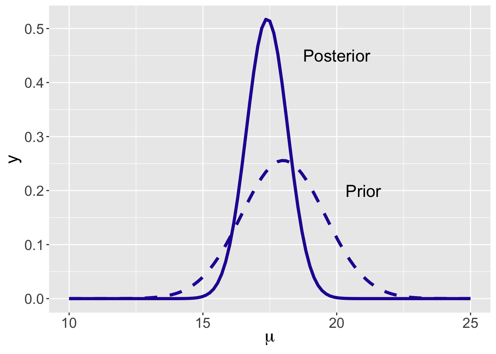
2.5.3 Bayes’ rule calculation
Section 8.5.2 gave an overview of the updating procedure for a Normal prior and Normal sampling. In this section we explain (1) why it is preferable to work with the precisions instead of the standard deviations; (2) why the precisions act as the weights in the calculation of the posterior mean and (3) why the posterior is a Normal distribution.
Recall a precision is the reciprocal of the square of the standard deviation. We use \(\phi = \frac{1}{\sigma^2}\) to represent the precision of a single observation in the Normal data/likelihood, and \(\phi_0 = \frac{1}{\sigma_0^2}\) to represent the precision in the Normal prior.
- We write down the likelihood of \(\mu\), combining terms, and writing the expression in terms of the precision \(\phi\). \[\begin{eqnarray} y_1, \cdots, y_n \mid \mu, \sigma &\overset{i.i.d.}{\sim}& {\rm{Normal}}(\mu, \sigma)\\% \equiv {\rm{Normal}}(\mu, \frac{1}{\phi}) \\ \end{eqnarray}\] \[\begin{eqnarray} L(\mu) = f(y_1, \cdots, y_n \mid \mu, \sigma) &=& \prod_{i=1}^{n} \frac{1}{\sqrt{2\pi}\sigma}\exp\left\{-\frac{1}{2\sigma^2}(y_i-\mu)^2\right\} \nonumber \\ &=& \prod_{i=1}^{n} \frac{1}{\sqrt{2\pi}}\phi^{\frac{1}{2}} \exp\left\{-\frac{\phi}{2}(y_i - \mu)^2)\right\}\nonumber \\ &=& \left(\frac{1}{\sqrt{2\pi}}\right)^n \phi^{\frac{n}{2}} \exp\left\{-\frac{\phi}{2}\sum_{i=1}^{n}(y_i - \mu)^2)\right\}\nonumber \\ \end{eqnarray}\]
Note that \(\sigma\) is assumed known, therefore the likelihood function is only in terms of \(\mu\), i.e. \(L(\mu)\).
In similar fashion, we write down the prior density for \(\mu\) including the prior precision \(\phi_0\). \[\begin{eqnarray} \mu &\sim& {\rm{Normal}}(\mu_0, \sigma_0) \\%\equiv {\rm{Normal}}(\mu_0, \frac{1}{\phi_0}) \\ \end{eqnarray}\] \[\begin{eqnarray} \pi(\mu) &=& \frac{1}{\sqrt{2\pi}\sigma_0} \exp\left\{-\frac{1}{2\sigma_0^2}(\mu - \mu_0)^2)\right\}\nonumber \\ &=& \frac{1}{\sqrt{2\pi}}\phi_0^{\frac{1}{2}} \exp\left\{-\frac{\phi_0}{2}(\mu - \mu_0)^2\right\} \end{eqnarray}\]
Bayes’ rule is applied by multiplying the prior by the likelihood to obtain the posterior. In deriving the posterior of \(\mu\), the manipulations require careful consideration regarding what is known. The only unknown variable is \(\mu\), so any “constants” or known quantities not depending on \(\mu\) can be dropped/added with the proportionality sign “\(\propto\)”.
\[\begin{eqnarray} \pi(\mu \mid y_1, \cdots, y_n, \sigma) &\propto& \pi(\mu) L(\mu) \nonumber \\ &\propto& \exp\left\{-\frac{\phi_0}{2}(\mu - \mu_0)^2\right\} \times \exp\left\{-\frac{n\phi}{2}(\mu - \bar{y})^2\right\} \nonumber \\ &\propto& \exp\left\{-\frac{1}{2}(\phi_0 +n\phi)\mu^2 + \frac{1}{2}(2\mu_0\phi_0 + 2n\phi\bar{y})\mu\right\} \nonumber \\ \texttt{[complete the square]} &\propto& \exp\left\{-\frac{1}{2}(\phi_0 + n\phi)(\mu - \frac{\phi_0 \mu_0 + n\phi\bar{y} }{\phi_0 + n \phi})^2\right\} \\ \end{eqnarray}\]
Looking closely at the final expression, one recognizes that the posterior for \(\mu\) is a Normal density with mean and precision parameters. Specifically we recognize \((\phi_0 + n \phi)\) as the posterior precision and \((\frac{\phi_0 \mu_0 + n \phi\bar{y}}{\phi_0 + n \phi})\) as the posterior mean. Summarizing, we have derived the following posterior distribution of \(\mu\),
\[\begin{eqnarray} \mu \mid y_1, \cdots, y_n, \sigma \sim {\rm{Normal}}\left(\frac{\phi_0 \mu_0 + n\phi\bar{y} }{\phi_0 + n \phi}, \sqrt{\frac{1}{\phi_0 + n \phi}}\right). \end{eqnarray}\]
In passing, it should be noted that the same result would be attained using the standard deviations, \(\sigma\) and \(\sigma_0\), instead of the precisions, \(\phi\) and \(\phi_0\). It is preferable to work with the precisions due to the relative simplicity of the notation. In particular, one sees in Table Table 8.5 that the posterior precision is the sum of the prior and data/likelihood precisions, that is, the posterior precision \(\phi_n = \phi_0 + n \phi\).
2.5.4 Conjugate Normal prior
Let’s summarize our calculations in Section 8.5.3. We collect a sequence of continuous observations that are assumed identically and independently distributed as \(\textrm{Normal}(\mu, \sigma)\), and a Normal prior is assigned to the mean parameter \(\mu\).
The sampling model: \[\begin{eqnarray} Y_1, \cdots, Y_n \mid \mu, \sigma &\overset{i.i.d.}{\sim}& {\rm{Normal}}(\mu, \sigma) \end{eqnarray}\] When \(\sigma\) (or \(\phi\)) is known, and mean \(\mu\) is the only parameter in the likelihood.
The prior distribution: \[\begin{eqnarray} \mu &\sim& {\rm{Normal}}(\mu_0, \sigma_0) \end{eqnarray}\]
After \(Y_1 = y_1, ..., Y_n = y_n\) are observed, the posterior distribution for the mean \(\mu\) is another Normal distribution with mean \(\frac{\phi_0 \mu_0 + n\phi\bar{y} }{\phi_0 + n \phi}\) and precision \(\phi_0 + n \phi\) (thus standard deviation \(\sqrt{\frac{1}{\phi_0 + n \phi}}\)):
\[\begin{eqnarray} \mu \mid y_1, \cdots, y_n, \sigma \sim {\rm{Normal}}\left(\frac{\phi_0 \mu_0 + n\phi\bar{y} }{\phi_0 + n \phi}, \sqrt{\frac{1}{\phi_0 + n \phi}}\right). \end{eqnarray}\]
In this situation where the sampling standard deviation \(\sigma\) is known, the Normal density is a conjugate prior for the mean of a Normal distribution, as the posterior distribution for \(\mu\) is another Normal density with updated parameters. Conjugacy is a convenient property as the posterior distribution for \(\mu\) has a convenient functional form. Conjugacy allows one to conduct Bayesian inference through exact analytical solutions and simulation. Also conjugacy provides insight on how the data and prior are combined in the posterior distribution.
The posterior compromises between the prior and the sample
Recall that Bayesian inference is a general approach where one initializes a prior belief for an unknown quantity, collects data expressed through a likelihood function, and combines prior and likelihood to give an updated belief for the unknown quantity. In Chapter 7, we have seen how the posterior mean of a proportion is a compromise between the prior mean and sample proportion (refer to Section 7.4.2 as needed). In the current Normal mean case, the posterior mean is similarly viewed as an estimate that compromises between the prior mean and sample mean. One rewrites the posterior mean in Equation (8.23) as follows: \[\begin{eqnarray} \mu_n = \frac{\phi_0 \mu_0 + n\phi\bar{y} }{\phi_0 + n \phi} &=& \frac{\phi_0}{\phi_0 + n\phi} \mu_0 + \frac{n\phi}{\phi_0 + n\phi} \bar{y}. \end{eqnarray}\] The prior precision is equal to \(\phi_0\) and the precision in the likelihood for any \(y_i\) is \(\phi\). Since there are \(n\) observations, the precision in the joint likelihood is \(n\phi\). The posterior mean is a weighted average of the prior mean \(\mu_0\) and sample mean \(\bar y\) where the weights are proportional to the associated precisions.
The posterior accumulates information in the prior and the sample
In addition, the precision of the posterior Normal mean is the sum of the precisions of the prior and likelihood. That is, \[\begin{equation} \phi_n = \phi_0 + n \phi. \end{equation}\] The implication is that the posterior standard deviation will always be smaller than either the prior standard deviation or the sampling standard error: \[\begin{equation*} \sigma_n < \sigma_0, \, \, \, \sigma_n < \frac{\sigma}{\sqrt{n}}. \end{equation*}\]
2.6 Bayesian Inferences for Continuous Normal Mean
Continuing with the example about Federer’s time-to-serve, our Normal prior had mean 18 seconds and standard deviation 1.56 seconds. After collecting 20 time-to-serve measurements with a sample mean of 17.2, the posterior distribution \(\textrm{Normal}(17.4, 0.77)\) reflects our opinion about the mean time-to-serve.
Bayesian inferences about the mean \(\mu\) are based on various summaries of this posterior Normal distribution. Because the exact posterior distribution of mean \(\mu\) is Normal, it is convenient to use R functions such as pnorm() and qnorm() to conduct Bayesian hypothesis testing and construct Bayesian credible intervals. Simulation-based methods utilizing functions such as rnorm() are also useful to provide approximations to those inferences. A sequence of examples are given in Section 8.6.1.
Predictions of future data are also of interest. For example, one might want to predict the next time-to-serve measurement based on the posterior distribution of \(\mu\) being \(\textrm{Normal}(17.4, 0.77)\). In Section 8.6.2, details of the prediction procedure and examples are provided.
2.6.1 Bayesian hypothesis testing and credible interval
A testing problem
In a testing problem, one is interested in checking the validity of a statement about a population quantity. In our tennis example, suppose someone says that Federer takes on average at least 19 seconds to serve. Is this a reasonable statement?
The current beliefs about Federer’s mean time-to-serve are summarized by a Normal distribution with mean 17.4 seconds and standard deviation 0.77 seconds. To assess if the statement ``\(\mu\) is 19 seconds or more” is reasonable, one simply computes its posterior probability, \(Prob(\mu \geq 19 \mid \mu_n = 17.4, \sigma_n = 0.77)\).
1 - pnorm(19, 17.4, 0.77)[1] 0.01885827This probability is about 0.019, a small value, so one would conclude that this person’s statement is unlikely to be true.
This is the exact solution using the pnorm() function with mean 17.4 and standard deviation 0.77. As seen in Chapter 7, simulation provides an alternative approach to obtaining the probability \(Prob(\mu \geq 19 \mid \mu_n = 17.4, \sigma_n = 0.77)\). To implement the simulation approach, recall that one generates a large number of values from the posterior distribution and summarizes this simulated sample. In particular, using the following R script, one generates 1000 values from the \(\textrm{Normal}(17.4, 0.77)\) distribution and approximates the probability of “\(\mu\) is 19 seconds or more” by computing the percentage of values that falls above 19.
S <- 1000
NormalSamples <- rnorm(S, 17.4, 0.77)
sum(NormalSamples >= 19) / S[1] 0.024The reader might notice that the approximated value of 0.024 differs from the exact answer of 0.019 using the pnorm() function. One way to improve the accuracy of the approximation is by increasing the number of simulated values. For example, increasing S from 1000 to 10,000 provides a better approximation to the exact probability 0.019.
S <- 10000
NormalSamples <- rnorm(S, 17.4, 0.77)
sum(NormalSamples >= 19) / S[1] 0.0175A Bayesian interval estimate
Bayesian credible intervals for the mean parameter \(\mu\) can be achieved both by exact calculation and simulation. Recall that a Bayesian credible interval is an interval that contains the unknown parameter with a certain probability content. For example, a 90% Bayesian credible interval for the parameter \(\mu\) is an interval containing \(\mu\) with a probability of 0.90.
The exact interval is obtained by using the R function qnorm(). For example, with the posterior distribution for \(\mu\) being \(\textrm{Normal}(17.4, 0.77)\), the following R script shows that a 90% central Bayesian credible interval is (16.133, 18.667). That is, the posterior probability of \(\mu\) falls between 16.133 and 18.667 is exactly 90%.
qnorm(c(0.05, 0.95), 17.4, 0.77)[1] 16.13346 18.66654For simulation-based inference, one generates a large number of values from its posterior distribution, then finds the 5th and 95th sample quantiles to obtain the middle 90% of the generated values. Below one sees that a 90% credible interval for posterior of \(\mu\) is approximately (16.151, 18.691).
S <- 1000
NormalSamples <- rnorm(S, 17.4, 0.77)
quantile(NormalSamples, c(0.05, 0.95)) 5% 95%
16.15061 18.69062 The Bayesian credible intervals can also be used for testing hypothesis. Suppose one again wants to evaluate the statement “Federer takes on average at least 19 seconds to serve.” One answers this question by computing the 90% credible interval. One notes that the values of \(\mu\) ``at least 19” are not included in the exact 90% credible interval (16.15, 18.69). The interpretation is that the probability is at least 0.90 that Federer’s average time-to-service is smaller than 19 seconds. One could obtain a wider credible interval, say by computing a central 95% credible interval (see the R output below), and observe that 19 is out of the interval. This indicates we are 95% confident that 19 seconds is not the value of Federer’s average time-to-serve.
qnorm(c(0.025, 0.975), 17.4, 0.77)[1] 15.89083 18.90917On the basis of this credible interval calculation, one concludes that the statement about Federer’s time-to-serve is unlikely to be true. This conclusion is consistent with the typical Bayesian hypothesis testing procedure given at the beginning of this section.
2.6.2 Bayesian prediction
Suppose one is interested in predicting Federer’s future time-to-serve. Since one has already updated the belief about the parameter, the mean \(\mu\), the prediction is made based on its posterior predictive distribution.
How to make one future prediction of Federer’s time-to-serve? In Chapter 7, we have seen two different approaches for predicting of a new survey outcome of students’ dining preferences. One approach in Chapter 7 is based on the derivation of the exact posterior predictive distribution \(f(\tilde{Y} = \tilde{y} \mid Y = y)\) which was shown to be a Beta-Binomial distribution. The second approach is a simulation-based approach, which involves two steps: first, sample a value of the parameter from its posterior distribution (a Beta distribution), and second, sample a prediction from the data model based on the sampled parameter draw (a Binomial distribution). When the sample size in the simulation-based approach is sufficiently large, a prediction interval from the simulation-based approach is an accurate approximation to the exact prediction interval.
Exact predictive distribution
We first describe the exact posterior predictive distribution. Consider making a prediction of a single Federer’s time-to-serve \(\tilde{Y}\). In general, suppose the sampling density of \(\tilde{Y}\) given \(\mu\) and \(\sigma\) is \(f(\tilde{Y} = \tilde{y} \mid \mu)\) and suppose the current beliefs about \(\mu\) are represented by the density \(\pi(\mu)\). The joint density of \((\tilde{y}, \mu)\) is given by the product \[\begin{equation} f(\tilde{Y} = \tilde{y}, \mu) = f(\tilde{Y} = \tilde{y} \mid \mu) \pi(\mu), \end{equation}\] and by integrating out \(\mu\), the predictive density of \(\tilde{Y}\) is given by \[\begin{equation} f(\tilde{Y} = \tilde{y}) = \int f(\tilde{Y} = \tilde{y} \mid \mu) \pi(\mu) d\mu. \end{equation}\]
The computation of the predictive density is possible for this Normal sampling model with a Normal prior. It is assumed that \(f(\tilde{Y} = \tilde{y} \mid \mu)\) is Normal with mean \(\mu\) and standard deviation \(\sigma\) and that the current beliefs about \(\mu\) are described by a Normal density with mean \(\mu_0\) and standard deviation \(\sigma_0\). Then it is possible to integrate out \(\mu\) from the joint density of \((\tilde{y}, \mu)\) and one finds that the predictive density for \(\tilde{Y}\) is Normal with mean and standard deviation given by \[\begin{equation} E(\tilde{Y}) = \mu_0, \, \, SD(\tilde{Y}) = \sqrt{\sigma^2 + \sigma_0^2}. \end{equation}\]
This result can be used to derive the posterior predictive distribution of \(f(\tilde{Y} = \tilde{y} \mid Y_1, \cdots, Y_n)\), where \(\tilde{Y}\) is a future observation and \(Y_1, \cdots, Y_n\) are \(n\) \(i.i.d.\) observations from a Normal sampling density with unknown mean \(\mu\) and known standard deviation \(\sigma\). After observing the sample values \(y_1, \cdots, y_n\), the current beliefs about the mean \(\mu\) are represented by a Normal\((\mu_n, \sigma_n)\) density, where the mean and standard deviation are given by \[\begin{equation} \mu_n = \frac{\phi_0 \mu_0 + n\phi\bar{y} }{\phi_0 + n \phi}, \sigma_n = \sqrt{\frac{1}{\phi_0 + n \phi}}. \end{equation}\] Then by applying our general result in Equation (8.28), the posterior predictive density of the single future observation \(\tilde{Y}\) is Normal with mean \(\mu_n\) and standard deviation \(\sqrt{\sigma^2 + \sigma_n^2}.\) That is, \[\begin{eqnarray} \tilde{Y} = \tilde{y} \mid y_1, \cdots, y_n, \sigma \sim \textrm{Normal}(\mu_n, \sqrt{\sigma^2 + \sigma_n^2}). \end{eqnarray}\]
An important aspect of the predictive distribution for \(\tilde{Y}\) is on the variance term \(\sigma^2 + \sigma_n^2\). The variability of a future prediction comes from two sources: (1) the data model variance \(\sigma^2\), and (2) the posterior variance \(\sigma_n^2\). Recall that the posterior variance \(\sigma_n^2 = \frac{1}{\phi_0 + n\phi}\). If one fixes values of \(\phi_0\) and \(\phi\) and allow the sample size \(n\) to grow, the posterior variance will approach zero. In this ``large \(n\)” case, the uncertainty in inference about the population mean \(\mu\) will decrease – essentially we are certain about the location of \(\mu\). However the uncertainty in prediction will not decrease towards zero. In contrast, in this large sample case, the variance of \(\tilde{Y}\) will decrease and approach the sampling variance \(\sigma^2\).
Predictions by simulation
The alternative method of computing the predictive distribution is by simulation. In this setting, there are two unknowns – the mean parameter \(\mu\) and the future observation \(\tilde Y\). One simulates a value from the predictive distribution in two steps: first, one simulates a value of the parameter \(\mu\) from its posterior distribution; second, use this simulated parameter draw to simulate a future observation \(\tilde Y\) from the data model. In particular, the following algorithm is used to simulate a single value from the posterior predictive distribution.
Sample a value of \(\mu\) from its posterior distribution \[\begin{eqnarray} \mu \sim \textrm{Normal}\left(\frac{\phi_0\mu_0 + n\phi\bar{y}}{\phi_0 + n\phi}, \sqrt{\frac{1}{\phi_0 + n\phi}}\right), \end{eqnarray}\]
Sample a new observation \(\tilde{Y}\) from the data model (i.e. a prediction) \[\begin{eqnarray} \tilde{Y} \sim \textrm{Normal}(\mu, \sigma). \end{eqnarray}\]
This two-step procedure is implemented for our time-to-serve example using the following R script.
sigma <- 4
mu_n <- 17.4
sigma_n <- 0.77
pred_mu_sim <- rnorm(1, mu_n, sigma_n)
(pred_y_sim <- rnorm(1, pred_mu_sim, sigma))[1] 16.04772The script can easily be updated to create \(S\) = 1000 predictions, which is helpful to make summary about predictions.
S <- 1000
pred_mu_sim <- rnorm(S, mu_n, sigma_n)
pred_y_sim <- rnorm(S, pred_mu_sim, sigma)The vector pred_y_sim contains 1000 predictions of Federer’s time-to-serve.
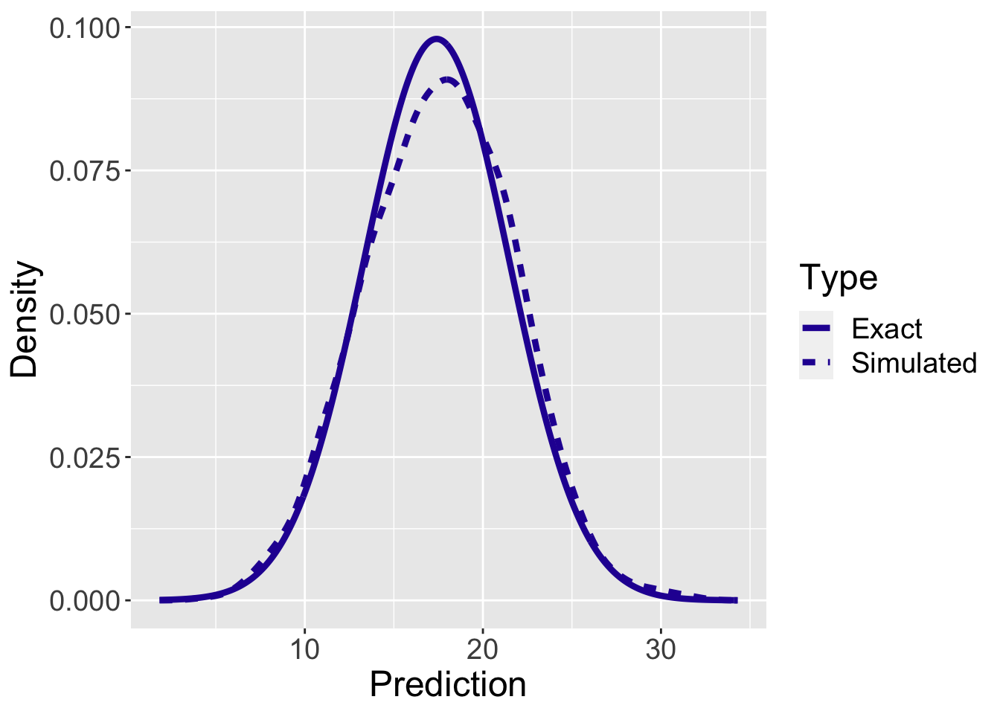
To evaluate the accuracy of the simulation-based predictions, Figure 8.7 displays the exact and a density estimate of the simulation-based predictive densities for a single time-to-serve measurement. One observes pretty good agreement using these two computation methods in this example.
2.7 Posterior Predictive Checking
In Section 8.6, the use of the posterior predictive distribution for predicting a future time-to-serve measurement was described. As discussed in Chapter 7, this distribution is also helpful for assessing the suitability of the Bayesian model.
In our example, we observed 20 times-to-serve for Federer. The question is whether these observed times are consistent with replicated data from the posterior predictive distribution. In this setting, replicated refers to the same sample size as our original sample. In other words, if one takes samples of 20 from the posterior predictive distribution, do these replicated datasets resemble the observed sample?
Since the population standard deviation is known as \(\sigma = 4\) seconds, the sampling distribution of \(Y\) is Normal with mean \(\mu\) and standard deviation \(\sigma\). One simulates replicated data \(\tilde Y_1, ..., \tilde Y_{20}\) from the posterior predictive distribution in two steps:
Sample a value of \(\mu\) from its posterior distribution \[\begin{eqnarray} \mu \sim \textrm{Normal}\left(\frac{\phi_0\mu_0 + n\phi\bar{y}}{\phi_0 + n\phi}, \sqrt{\frac{1}{\phi_0 + n\phi}}\right). \end{eqnarray}\]
Sample \(\tilde Y_1, ..., \tilde Y_{20}\) from the data model \[\begin{eqnarray} \tilde{Y} \sim \textrm{Normal}(\mu, \sigma). \end{eqnarray}\]
This method is implemented in the following R script to simulate 1000 replicated samples from the posterior predictive distribution. The vector pred_mu_sim contains draws from the posterior distribution and the matrix ytilde contains the simulated predictions where each row of the matrix is a simulated sample of 20 future times.
sigma <- 4
mu_n <- 17.4
sigma_n <- 0.77
S <- 1000
pred_mu_sim <- rnorm(S, mu_n, sigma_n)
sim_ytilde <- function(j){
rnorm(20, pred_mu_sim[j], sigma)
}
ytilde <- t(sapply(1:S, sim_ytilde))To judge goodness of fit, we wish to compare these simulated replicated datasets from the posterior predictive distribution with the observed data. One convenient way to implement this comparison is to compute some “testing function”, \(T(\tilde y)\), on each replicated dataset. If we have 1000 replicated datasets, one has 1000 values of the testing function. One constructs a graph of these values and overlays the value of the testing function on the observed data \(T(y)\). If the observed value is in the tail of the posterior predictive distribution of \(T(\tilde y)\), this indicates some misfit of the observed data with the Bayesian model.
To implement this procedure, one needs to choose a testing function \(T(\tilde y)\). Suppose, for example, one decides to use the sample mean \(T(\tilde y) = \sum \tilde y_j / 20\). In the R script, we compute the sample mean on each row of the simulated prediction matrix.
pred_ybar_sim <- apply(ytilde, 1, mean)Figure 8.8 displays a density estimate of the simulated values from the posterior predictive distribution of \(\bar Y\) and the observed value of the sample mean \(\bar Y = 17.20\) is displayed as a vertical line. Since this observed mean is in the middle of this distribution, one concludes that this observation is consistent with samples predicted from the Bayesian model. It should be noted that this conclusion about model fit is sensitive to the choice of checking function \(T()\). In the end-of-chapter exercises, the reader will explore the suitability of this model using alternative choices for the checking function.
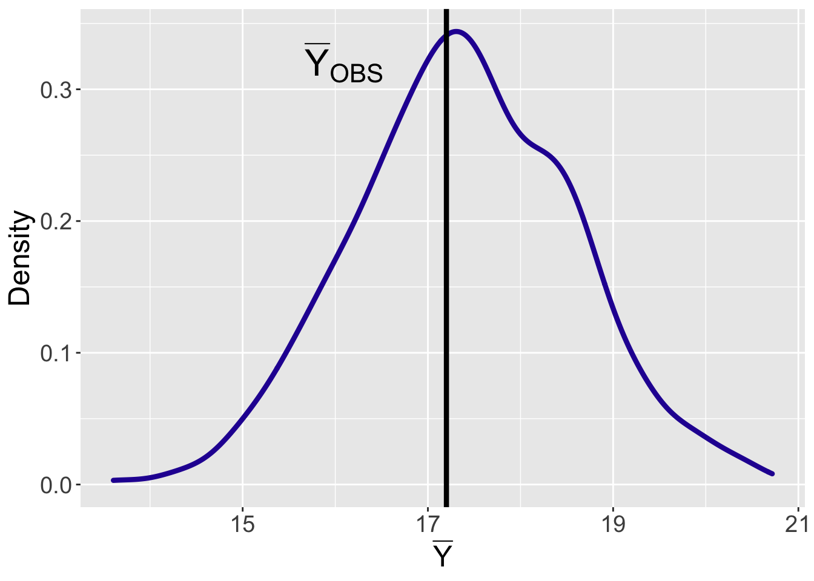
2.8 Modeling Count Data
To further illustrate the Bayesian approach to inference for measurements, consider Poisson sampling, a popular model for count data. One assumes that one observes a random sample from a Poisson distribution with an unknown rate parameter \(\lambda\). The conjugate prior for the Poisson mean is the Gamma distribution. This scenario provides further practice in various Bayesian computations, such as computing the likelihood function and posterior distribution, and obtaining the predictive distribution to learn about future data. In this section, we focus on the main results and the detailed derivations are left as end-of-chapter exercises.
2.8.1 Examples
Counts of patients in an emergency room
A hospital wants to determine how many doctors and nurses to assign on their emergency room (ER) team between 10pm and 11pm during the week. An important piece of information is the count of patients arriving in the ER in this one-hour period.
For a count measurement variable such as the count of patients, a popular sampling model is the Poisson distribution. This distribution is used to model the number of times an event occurs in an interval of time or space. In the current example, the event is a patient’s arrival to the ER, and the time interval is the period between 10pm and 11pm. The hospital wishes to learn about the average count of patients arriving to the ER each hour. Perhaps more importantly, the hospital wants to predict the patient count since that will directly address the scheduling of doctors and nurses question.
Counts of visitors to a website
As a second example, suppose one is interested in monitoring the popularity of a particular blog focusing on baseball analytics. Table 8.7 displays the number of visitors viewing this blog for 28 days during June of 2019. In this setting, the event of interest is a visit to the blog website and the time interval is a single day. The blog author is particularly interested in learning about the average number of visitors during the days Monday through Friday and predicting the number of visits for a future day in the summer of 2019.
Table 8.7. Number of visitors to a baseball blog site during different days during June, 2019.
| Fri | Sat | Sun | Mon | Tue | Wed | Thu | |
|---|---|---|---|---|---|---|---|
| Week 1 | 95 | 81 | 85 | 100 | 111 | 130 | 113 |
| Week 2 | 92 | 65 | 78 | 96 | 118 | 120 | 104 |
| Week 3 | 91 | 91 | 79 | 106 | 91 | 114 | 110 |
| Week 4 | 98 | 61 | 84 | 96 | 126 | 119 | 90 |
Count of visitors to blog during 28 days during June 2019.
2.8.2 The Poisson distribution
Let the random variable \(Y\) denote the number of occurrences of an event in an interval with sample space \(\{0, 1, 2, \cdots \}\). In contrast to the Normally distributed continuous measurement, note that \(Y\) only takes integer values from 0 to infinity. The variable \(Y\) follows a Poisson distribution with rate parameter \(\lambda\) when the probability mass function (pmf) of observing \(y\) events in an interval is given by
\[\begin{eqnarray} f(Y = y \mid \lambda) = e^{-\lambda}\frac{\lambda^y}{y!}, \, \, y = 0, 1, 2, ... \end{eqnarray}\] where \(\lambda\) is the average number of events per interval, \(e = 2.71828...\) is Euler’s number, and \(y!\) is the factorial of \(y\).
The Poisson sampling model is based on several assumptions about the sampling process. One assumes that the time interval is fixed, counts of arrivals occurring during different time intervals are independent, and the rate \(\lambda\) at which the arrivals occur is constant over time. To check the suitability of the Poisson distribution for the examples, one needs to check the conditions one by one.
- The time interval is fixed in the ER example as we observe patient arrivals during a one hour period between 10pm and 11pm. For the blog visits example, the fixed time period is one day.
- In both examples, one assumes that events occur independently during different time intervals. In the ER example it is reasonable to assume that the time of one patient’s arrival does not influence the time of another patient’s arrival. For the website visits example, if different people are visiting the website on different days, then one could assume the number of visits on one day would be independent of the number of visits on another day.
- Is it reasonable to assume the rate \(\lambda\) at which events occur is constant through the time interval? In the ER example, one might not think that the rate of patient arrivals would change much through one hour during the evening, so it seems reasonable to assume that the average number of events is constant in the fixed interval. Similarly, if one focuses on weekdays, then for the website visits example, it is reasonable to assume that the average number of visits remains constant across days.
In some situations, the second and third conditions will be violated. In our ER example, the occurrence of serious accidents may bring multiple groups of patients to the ER at certain time intervals. In this case, arrival times of patients may not be independent and the arrival rate \(\lambda\) in one subinterval will be higher than the arrival rate of another subinterval. When such situations occur, one needs to decide about the severity of the violation of the conditions and possibly use an alternative sampling model instead of the Poisson.
As evident in Equation (8.35), the Poisson distribution has only one parameter, the rate parameter \(\lambda\), so the Poisson sampling model belongs to the family of one-parameter sampling models. The Binomial data model with success probability \(p\) and the Normal data model with mean parameter \(\mu\) (with known standard deviation) are two other examples of one-parameter models. One distinguishes these models by the type of possible sample values, discrete or continuous. The Binomial random variable is the number of successes and the Poisson random variable is a count of arrivals, so they both are discrete one-parameter models. In contrast, the Normal sampling data model is a continuous one-parameter model.
2.8.3 Bayesian inferences
The reader should be familiar with the typical procedure of Bayesian inference and prediction for one-parameter models. We rewrite this procedure in the context of the Poisson sampling model.
- [Step 1] One constructs a prior expressing an opinion about the location of the rate \(\lambda\) before any data is collected.
- [Step 2] One takes the sample of intervals and records the number of arrivals in each interval. From this data, one forms the likelihood, the probability of these observations expressed as a function of \(\lambda\).
- [Step 3] One uses Bayes’ rule to compute the posterior – this distribution updates the prior opinion about \(\lambda\) given the information from the data.
- In addition, one computes the predictive distribution to learn about the number of arrivals in future intervals. The posterior predictive distribution is also useful in checking the appropriateness of our model.
Gamma prior distribution
One begins by constructing a prior density to express one’s opinion about the rate parameter \(\lambda\). Since the rate is a positive continuous parameter, one needs to construct a prior density that places its support only on positive values. The convenient choice of prior distributions for Poisson sampling is the Gamma distribution which has a density function given by \[\begin{eqnarray} \pi(\lambda \mid \alpha, \beta) = \frac{\beta^{\alpha}}{\Gamma{(\alpha)}} \lambda^{\alpha-1}e^{-\beta \lambda}, \,\,\, \text{for}\,\, \lambda > 0, \,\, \text{and}\,\, \alpha, \beta > 0, \end{eqnarray}\] where \(\Gamma(\alpha)\) is the Gamma function evaluated at \(\alpha\). The Gamma density is a continuous density where the support is on positive values. It depends on two parameters, a positive shape parameter \(\alpha\) and a positive rate parameter \(\beta\).
The Gamma density is a flexible family of distributions that can reflect many different types of prior beliefs about the location of the parameter \(\lambda\). One chooses values of the shape \(\alpha\) and the rate \(\beta\) so that the Gamma density matches one’s prior information about the location of \(\lambda\). In R, the function dgamma() gives the density, pgamma() gives the distribution function and qgamma() gives the quantile function for the Gamma distribution. These functions are helpful in graphing the prior and choosing values of the shape and rate parameters that match prior statements about Gamma percentiles and probabilities. We provide an illustration of choosing a subjective Gamma prior in the example.
Sampling and the likelihood
Suppose that \(Y_1, ..., Y_n\) represent the observed counts in \(n\) time intervals where the counts are independent and each \(Y_i\) follows a Poisson distribution with rate \(\lambda\). The joint mass function of \(Y_1, ..., Y_n\) is obtained by multiplying the Poisson densities. \[\begin{eqnarray} f(Y_1 = y_1, ... , Y_n = y_n \mid \lambda ) &=& \prod_{i=1}^{n}f(y_i \mid \lambda) \nonumber \\ &\propto& \lambda^{\sum_{i=1}^{n}y_i} e^{-n\lambda}. \end{eqnarray}\] Once the counts \(y_1, ..., y_n\) are observed, the likelihood of \(\lambda\) is the joint probability of observing this data, viewed as a function of the rate parameter \(\lambda\). \[\begin{equation} L(\lambda) = \lambda^{\sum_{i=1}^{n}y_i} e^{-n\lambda}. \end{equation}\]
If the rate parameter \(\lambda\) in the Poisson sampling model follows a Gamma prior distribution, then it turns out that the posterior distribution for \(\lambda\) will also have a Gamma density with updated parameters. This demonstrates that the Gamma density is the conjugate distribution for Poisson sampling as the prior and posterior densities both come from the same family of distribution: Gamma.
We begin by assuming that the Poisson parameter \(\lambda\) has a Gamma distribution with shape and rate parameters \(\alpha\) and \(\beta\), that is, \(\lambda \sim\) Gamma\((\alpha, \beta)\). If one multiplies the Gamma prior by the likelihood function \(L(\lambda)\), then in an end-of-chapter exercise you will show that the posterior density of \(\lambda\) is Gamma\((\alpha_n, \beta_n)\), where the updated parameters \(\alpha_n\) and \(\beta_n\) are given by \[\begin{equation} \alpha_n = \alpha + \sum_{i=1}^n y_i, \, \, \, \beta_n = \beta + n. \end{equation}\]
Inference about \(\lambda\)
Once the posterior distribution has been derived, then all inferences about the Poisson parameter \(\lambda\) are performed by computing particular summaries of the Gamma posterior distribution. In particular, one may be interested in testing if \(\lambda\) falls in a particular region by computing a posterior probability. All of these computations are facilitated using the pgamma(), qgamma(), and rgamma() functions. Or one may be interested in constructing an interval estimate for \(\lambda\). In the end-of-chapter exercises, there are opportunities to perform these inferences using a dataset containing a sample of ER arrival counts.
Prediction of future data
One advantage of using a conjugate prior is that the predictive density for a future observation \(\tilde Y\) is available in closed form. Suppose \(\lambda\) is assigned a \(\textrm{Gamma}(\alpha, \beta\)) prior. Then the prior predictive density of \(\tilde Y\) is given by \[\begin{eqnarray} f(\tilde{Y} = \tilde y) &=& \int f(\tilde{Y} = \tilde{y} \mid \lambda) \pi(\lambda) \lambda \nonumber \\ & =& \int \frac{e^{-\lambda} \lambda^{\tilde y}} {\tilde y!} \frac{\beta^{\alpha}}{\Gamma{(\alpha)}} \lambda^{\alpha-1}e^{-\beta \lambda} d \lambda \nonumber \\ &=& \frac{\Gamma(\alpha + \tilde y)}{\Gamma(\alpha)} \frac{\beta^\alpha}{(\beta + 1)^{\tilde y + \alpha}}. \end{eqnarray}\]
In addition, the posterior distribution of \(\lambda\) also has the Gamma form with updated parameters \(\alpha_n\) and \(\beta_n\). So Equation (8.40) also provides the posterior predictive distribution for a future count \(\tilde Y\) using the updated parameter values.
For prediction purposes, there are several ways of summarizing the predictive distribution. One can use the formula in Equation (8.40) to directly compute \(f(\tilde Y)\) for a list of values of \(\tilde Y\) and then one uses the computed probabilities to form a prediction interval for \(\tilde Y\). Alternately, one simulates values of \(\tilde Y\) in a two-step process. For example, if one wants to simulate a draw from the posterior predictive distribution, one would first simulate a value \(\lambda\) from its posterior distribution, and given that simulated draw \(\lambda^*\), simulate \(\tilde Y\) from a Poisson distribution with mean \(\lambda^*\). Repeating this process for a large number of iterations provides a sample from the posterior prediction distribution that one uses to construct a prediction interval.
2.8.4 Case study: Learning about website counts
Let’s return to the website example where one is interested in learning about the average weekday visits to a baseball analytics blog site. One observes the counts \(y_1, ..., y_{20}\) displayed in the “Mon”, “Tue”, “Wed”, “Thu”, “Fri” columns of Table 8.7. We assume the {\(y_i\)} represent a random sample from a Poisson distribution with mean parameter \(\lambda\).
Suppose one’s prior guess at the value of \(\lambda\) is 80 and one wishes to match this information with a Gamma(\(\alpha, \beta\)) prior. Two helpful facts about the Gamma distribution are that the mean and variance are equal to \(\mu = \alpha / \beta\) and \(\sigma^2 =\alpha / \beta^2 = \mu / \beta,\) respectively. Figure 8.9 displays three Gamma curves for values \((\alpha, \beta\)) = (80, 1), (40, 0.5), and (20, 0.25). Each of these Gamma curves have a mean of 80 and the curves become more diffuse as the parameter \(\beta\) moves from 1 to 0.25. After some thought, the user believes that the Gamma(80, 1) matches her prior beliefs. To check, she computes a prior probability interval. Using the qgamma() function, she finds that her 90% prior probability interval is \(Prob(65.9 < \lambda < 95.3) = 0.90\) and this appears to be a reasonable approximation to her prior beliefs.
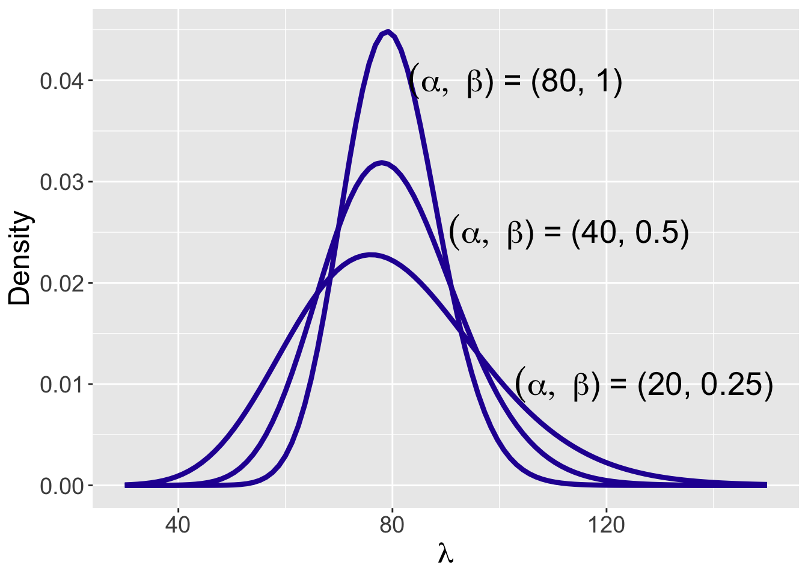
From the data, we compute \(\sum_{i=1}^{20} y_i = 2120\) and the sample size is \(n = 20\). The posterior distribution is Gamma(\(\alpha_n, \beta_n)\) where the updated parameters are \[\begin{equation*}
\alpha_n = 80 + 2120 = 2200, \, \, \beta_n = 1 + 20 = 21.
\end{equation*}\] Figure 8.10 displays the Gamma posterior curve for \(\lambda\). This figure displays a 90% probability interval which is found using the qgamma() function to be (101.1, 108.5). The interpretation is that the average number of visits lies between 101.1 and 108.5 with probability 0.90.
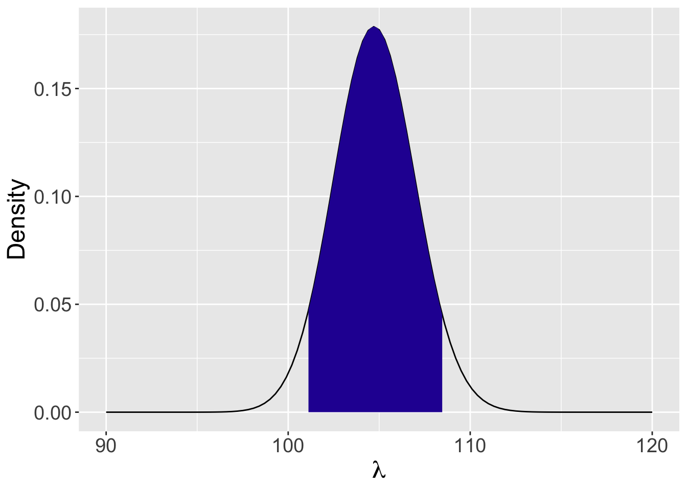
Suppose the user is interested in predicting the number of blog visits \(\tilde Y\) at a future summer weekday. One simulates the posterior predictive distribution by first simulating 1000 values from the Gamma posterior, and then simulating values of \(\tilde Y\) from Poisson distributions where the Poisson means come from the posterior. Figure 8.11 displays a histogram of the simulated values from the predictive distribution. The 5th and 95th quantiles of this distribution are computed to be 88 and 123 – there is a 90% probability that that the number of visitors in a future weekday will fall in the interval (88, 123).
5% 95%
88.95 123.00 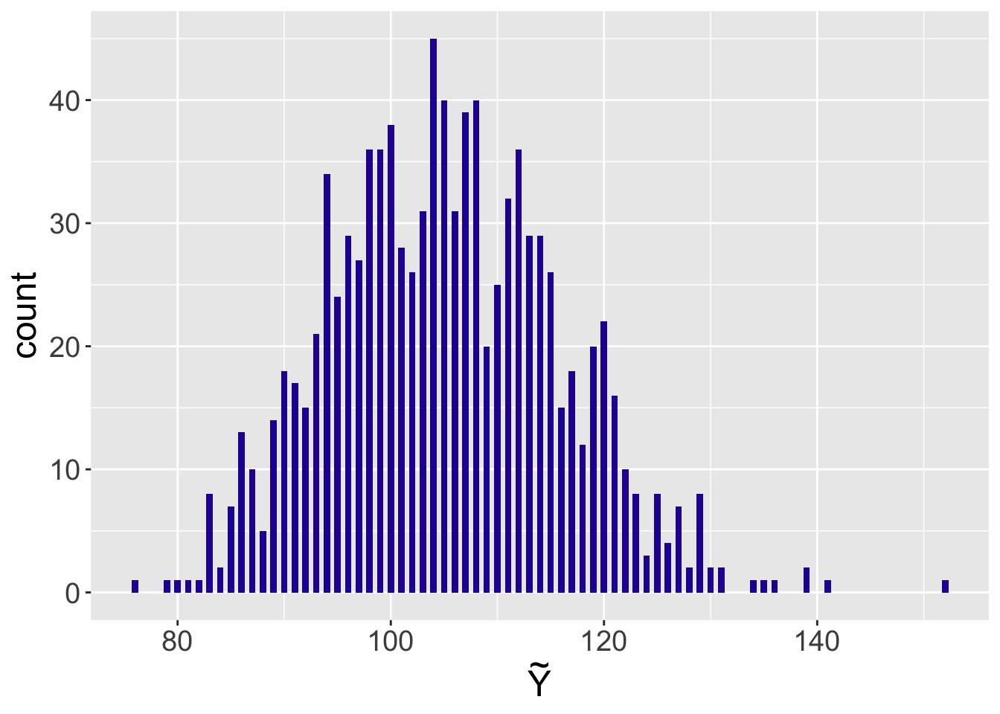
Comment elements of an inference problem
All three examples have common elements:
One has an underlying population of measurements, where the measurement is an integer, such as the number of college applications, or continuous, such as a housing cost or a cat weight.
One is interested in learning about the value of the mean \(\mu\) of the population of measurements.
It is impossible or impractical to collect all measurements from the population, so one will collect a sample of measurements \(Y_1, ..., Y_n\) and use the observed measurements to learn about the unknown population mean \(\mu\).